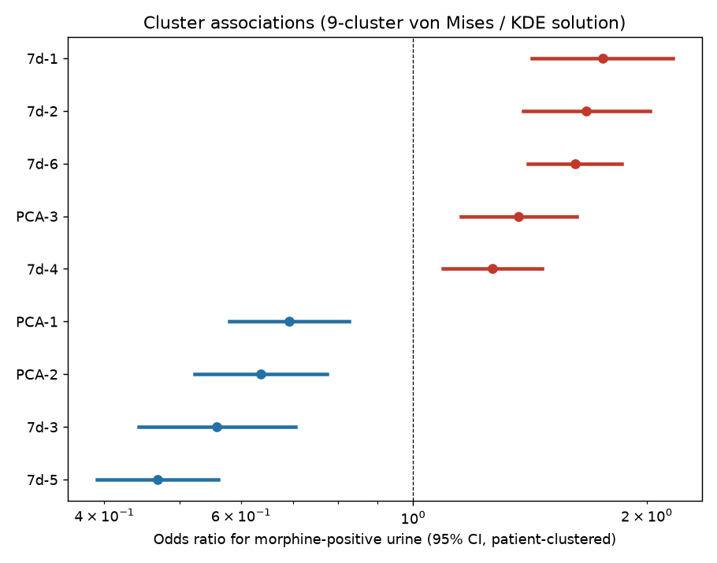
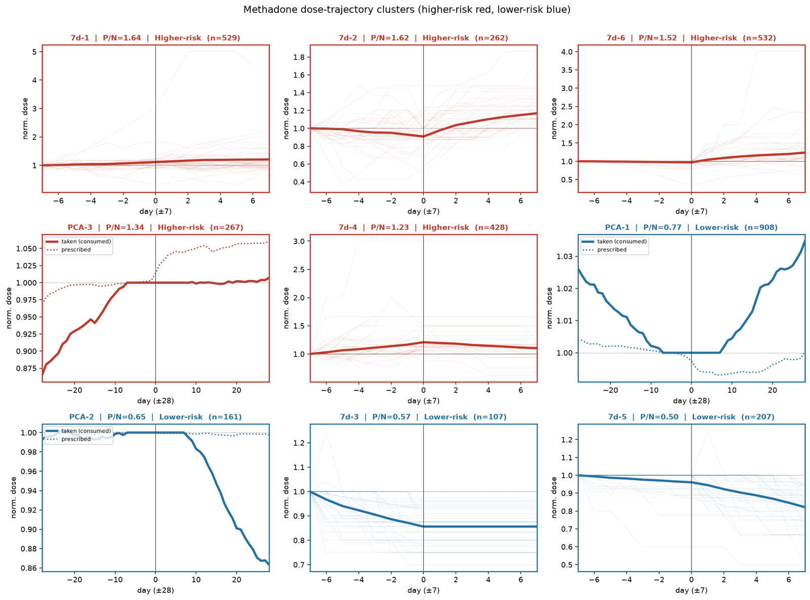
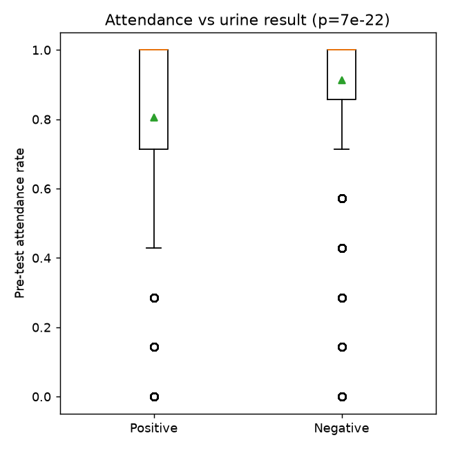
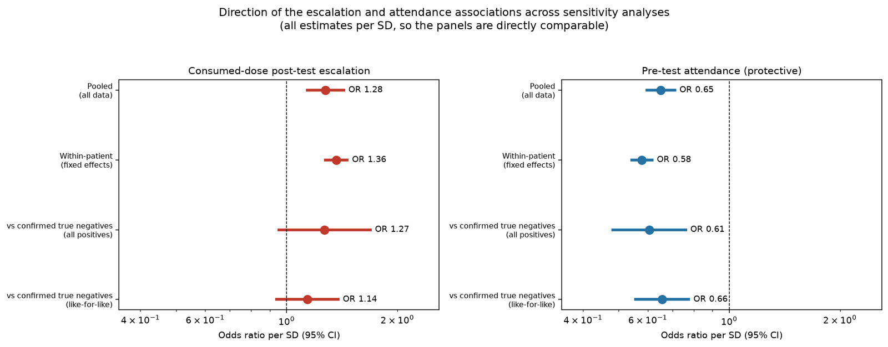
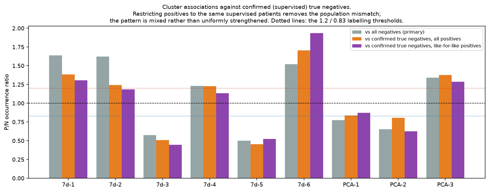

Manuscript · under revision · observational study, STROBE
Consumed methadone dose patterns around randomly scheduled urine testing
A methods problem disguised as a clinical one: the discriminating feature of a dose trajectory is its shape, but shape is confounded with magnitude and lives on a space Euclidean clustering gets wrong.
Mu-Hua Wang · Tso-Jeng Wang · Taoyuan General Hospital
Manuscript as submitted; still under revision. Not posted to any preprint server.
The setting, and why it is unusual
patients
Contributing 9,900 analysable morphine urine tests, 2018–2022, of which 3,401 were positive.
observed consumption
Methadone was dispensed and consumed under staff observation and take-home dosing was not permitted, so the exposure is observed consumption, not an inference from dispensing.
test scheduling
Collection occasions were randomly scheduled, not clinician-triggered — which closes the reverse-causation pathway that would otherwise be the most serious threat to any antecedent claim.
Those two design features are what license a behavioural reading at all. They are unusual in this literature.
The representation

Why not Euclidean clustering: it does not respect wrap-around at 0°/360°. The mixture is fitted by EM on the circle instead. For the stable-dose branch, 114 variables were reduced by PCA and a circular kernel-density estimate was cut at its valleys.
Why this matters later: interpolation of a non-attended day inserts a straight segment, which inflates the length of the slope vector. The polar-angle features retain only its direction. That is why cluster membership survives the imputation check and a magnitude scalar does not.
Nine patterns, ordered by risk


| Association | Estimate | Status |
|---|---|---|
| Pre-test escalation, within patients, imputation-free ±7-day windows strengthens from 1.15 on the full sample. Over ±28 days, 1.37 [1.20–1.56]. | OR 1.26 per SD [1.15–1.38] p = 3×10−7 |
claimed |
| Attendance in the preceding week The strongest single correlate, and protective. | OR 0.84 per 0.1 p = 7×10−22 |
claimed |
| Cluster membership, not reducible to any single slope Against the pre-test slope χ² = 328 on 8 df; against the post-test slope 261; against both together 254. | χ² = 261, 8 df p < 10−50 |
claimed |
| Post-test escalation magnitude Falls from 1.36 to 1.06 on imputation-free windows, and rises to 1.44 [1.30–1.60] on the complement — so it appears to be largely generated by the imputed days. | OR 1.06 per SD [0.97–1.15] p = 0.23 |
withdrawn |

What the finding survived
The result was attacked from five directions before it was claimed.
- Outcome-blind re-clustering. Re-clustering the pooled sample without reference to the urine result gave ten clusters, agreeing at an adjusted Rand index of 0.60; 6 of the 9 primary clusters are reproduced by a distinct blind cluster of the same direction and near-identical P/N.
- Adjustment for attendance. All nine clusters remain significant, though two attenuate materially (1.62 → 1.29 and 1.67 → 1.37).
- Within patients. Refitting with patient fixed effects on the 451 patients contributing both outcomes: 8 of 9 clusters significant in the same direction. So these are peri-test phenomena, not between-patient case-mix.
- Imputation-free windows. 5,644 tests (57 %) over ±7 days contained no interpolated day. 7 of 8 cluster contrasts survive. An earlier version of this subset was defined wrongly — 15 % of it in fact contained interpolated values — and every figure was recomputed on the corrected subsets.
- Confounding by prescribing. A pre-test rise could be the clinic prescribing more. The two series are only weakly related (r = 0.14) and adjusting for the prescribed slope leaves the consumed-dose association essentially unchanged (1.259 → 1.236).

What is not claimed
Three boundaries define what the study supports, and one of them is a qualification on the primary claim rather than a limitation.
It did not replicate out of time
Splitting at the median date of April 2020, the attendance association replicated in the held-out later period (OR 0.86 → 0.78 per 0.1, both p < 10−7). The dose-change association did not: earlier OR 1.18 (p = 0.01), later 1.15 with an interval crossing unity (p = 0.17).
The paper treats this as a qualification of the primary claim and not merely a limitation. The split coincides with the onset of the pandemic, which is one candidate explanation but does not excuse it.
It is associational, not predictive
Under patient-grouped cross-validation, a baseline of pre-test attendance plus prior urine-test history reached an AUC of about 0.83, and adding the full pre-test dose-trajectory features changed this by about 0.00.
The signal carries no incremental predictive value over routinely available history. An exhaustive search over richer feature sets, personalised baselines, stratification and change-point formulations did not raise the ceiling — so this negative result was not tuned in the paper's favour.
Three further limits
The stable-dose branch is exploratory and nothing in it is claimed: an alternative circular partition of the same tests yields no higher-risk stable-dose cluster at all.
The number of clusters was chosen, not selected by a criterion. Cluster boundaries move under resampling, so the labels are a descriptive device. There is no registered protocol and no pre-registered analysis plan.
Long-retained patients only. The programme restricted the cohort to patients retained at least two years, excluding 5,214 of 15,592 dosing-linked records. The excluded occasions had a higher positive rate and much lower attendance, so this does not extend to early treatment — the phase where such a marker would probably be most useful.
Also stated plainly in the paper: urine testing follows routine clinical procedures and under-detects use; the peri-test window contains both a patient behaviour and a clinical response and cannot separate them; and age and sex were absent from the data extract, so residual confounding by demographic case-mix cannot be assessed.

What a clinician could take from it
The effect sizes translate into modest to moderate shifts in absolute risk. Taking the analysis-sample positive rate of roughly one third as an illustrative baseline, the strongest higher-risk pattern (OR 1.75) corresponds to a rise from roughly 34 % to 47 %, and the protective tapering pattern (about 0.5) to a fall from roughly 34 % to 20 %.
A practical hierarchy: declining attendance is the clearest and most actionable warning sign; a rising consumed dose relative to the patient's own baseline is a useful corroborating signal but not a standalone alarm; stable or tapering dosing with good attendance characterises the settled, lower-risk patient.
These are population-level associations, not thresholds for flagging an individual. No single marker, nor their combination, predicts an individual's next result with useful accuracy.